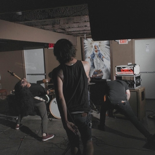

RAZOR.BLADE.FREIGHT.TRAIN
Legend has it that the GnarWolf was
born with a Norma Jean record in one hand, and a book full of Slayer lyrics in the other
.
Often
characterized by heavy, angular grooves, hardcore rhythms and off-kilter, dissonant breakdowns
.
they are
inspired by two things; adrenaline & utter, fucking, chaos
.
Having independently released 2 EPs and a split,
there is no beating around the bush in sound and intent...a trespass which is merciless, abrasive, and increasingly tasty
.
Armed with a sound both familiar and fresh, they have supported acts such as Norma Jean, He Is Legend, and '68; GnarWolf can be regularly found throughout the Midwest and Southern United States. Riots and small-scale warfare tend to follow in its wake.
contact: contact@gnarlywerewolf.com